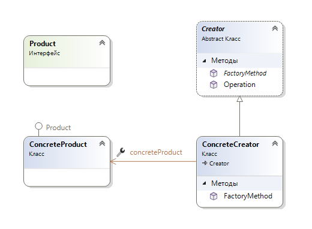

Задание 1
1/11
Фабричный метод дает нам способ инкапсулировать экземпляры конкретных типов. Шаблон фабричного метода инкапсулирует функциональность, необходимую для выбора и создания экземпляра соответствующего класса внутри назначенного метода, называемого фабричным методом. Фабричный метод выбирает соответствующий класс из иерархии классов на основе контекста приложения и других влияющих факторов. Затем он создает экземпляр выбранного класса и возвращает его как экземпляр типа родительского класса.
Преимущество этого подхода заключается в том, что объекты приложения могут использовать метод фабрики для получения доступа к соответствующему экземпляру класса. Это устраняет необходимость для объекта приложения иметь дело с различными критериями выбора класса.

Product - определяет интерфейс объектов, которые создает фабричный метод.
ConcreteProduct - реализует интерфейс продукта.
Creator - объявляет фабричный метод, который возвращает объект типа Product. Создатель может также определить реализацию по умолчанию
метода фабрики, который возвращает объект ConcreteProduct по умолчанию. Может вызвать фабричный метод для создания объекта Product.
ConcreteCreator - переопределяет фабричный метод для возврата экземпляра ConcreteProduct.